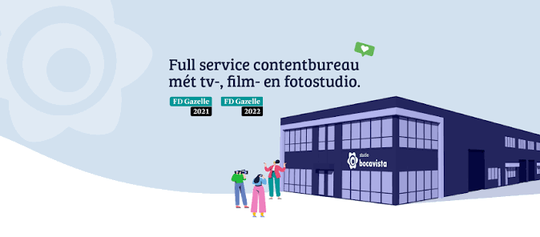
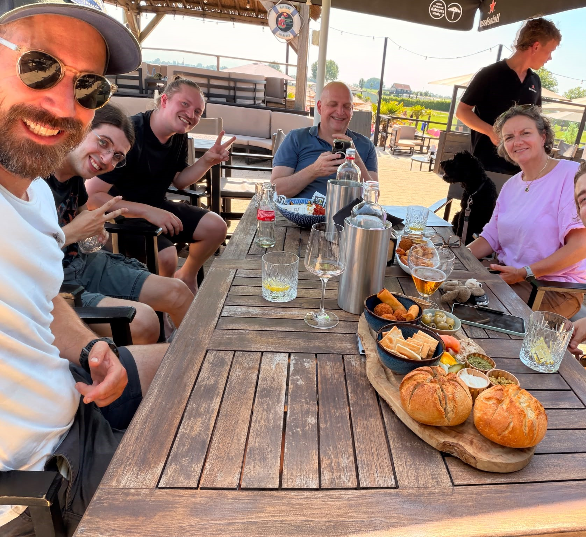

ABOUT THE INTERNSHIP
Van februari tot juni 2026 liep ik stage bij Studio Bocavista in Vianen. Dit was mijn eerste kans om mijn DaVinci Resolve-vaardigheden toe te passen in een professionele omgeving, en dit was een ontzettend waardevolle ervaring. Vanaf de eerste dag kreeg ik vertrouwen met echte klantprojecten, waarbij ik werkte aan uiteenlopende opdrachten, van socialmedia-content tot zakelijke animaties.
De samenwerkende sfeer binnen de studio zorgde ervoor dat ik snel kon groeien. Ik leerde hoe ik klantbriefings moest interpreteren, binnen strakke deadlines kon werken en werk kon opleveren dat aan professionele standaarden voldoet. Daarnaast heb ik mijn kennis van After Effects flink uitgebreid door nieuwe motion graphics-technieken te leren van de ervaren designers.
Aan het einde van mijn stage had ik meegewerkt aan meerdere projecten voor echte klanten, waaronder opdrachten voor de Gemeente Den Haag en het verfbedrijf Trimetal. Deze ervaring heeft mijn passie voor post-productie versterkt en mij het vertrouwen gegeven om een carrière binnen dit vakgebied na te streven.
